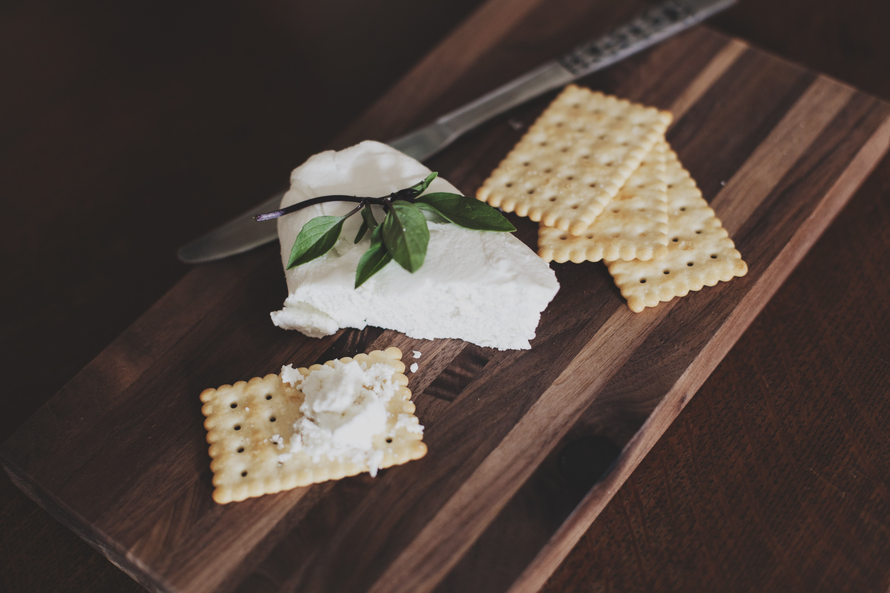
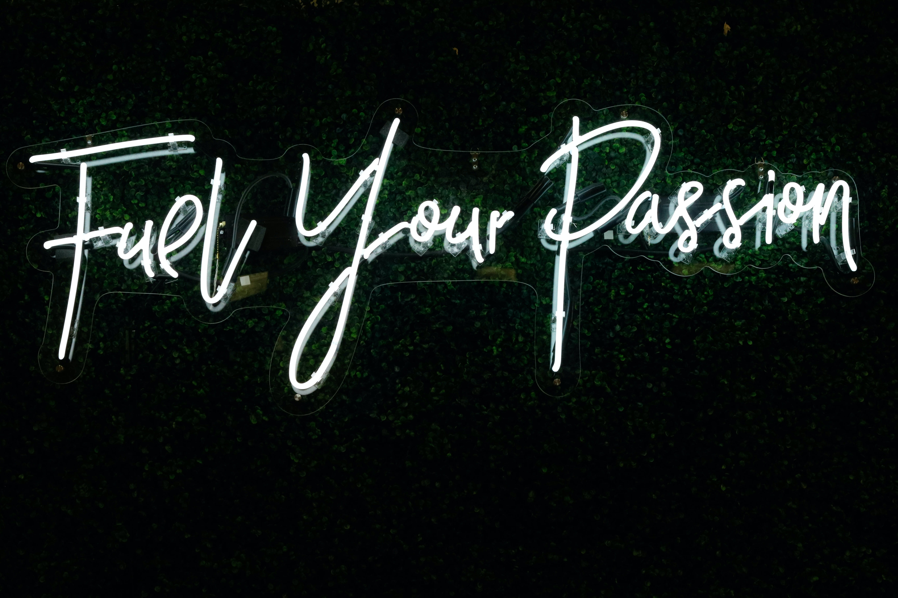

I love ending my day with a good book. I like all genres except fantasy and thriller.
Hi, I'm Samantha Lin!
I'm currently a fourth year student at UCSD working on a Bachelor of Science in Mathematics-Computer Science and double minoring in Business and Accounting. I am passionate about software development, working with others to acheive a goal and design. My goal is to one day lead my own group of developers.
Education
University of California, San Diego
September 2019 - Expected June 2023
Bachelor of Science in Mathematics-Computer Science
Double minoring in Business and Accounting
Experience
Instructional Assistant, UCSD Cognitive Science
September 2022 - current
Academic Integrity Proctor, UCSD
December 2021 - current
Academic Integrity Mentor, UCSD
March 2022 - June 2022
Cashier and Storefront, Meetfresh, Taiwanese Dessert Shop
January 2019 - March 2020
Achievements
Provost‘s Honors
March 2020 - current
Caledonian Society
May 2021, May 2022
School Involvement
Beta Alpha Psi, VP of Marketing
September 2021 - current
Women in Computing
Member of Beginner's Programming Competition Committee
September 2019 - current
Skills
Time management skills
Organizational skills
Pays close attention to detail
Fluent in English and Mandarin
Proficient in Java, Python, HTML, CSS, Javascript
Proficient in Microsoft Office, Google Drive, NoSQL
Works well independently and in a group setting
Capable of managing multiple assignments at once

I love traveling. I have visited 20 out of 50 states in the US.
I went on a roadtrip and drove almost 4000 miles in a week.
My favorite states I have visited are Idaho and Hawaii.

I love listening to all kinds of music. I know how to play the piano, violin and bass, which is bigger than me.

I love cooking and baking. Even though I'm not that great at it, I still keep trying.

I love to learn new things.

I started to become more interested in front-end development and design after taking a software engineerinng class.